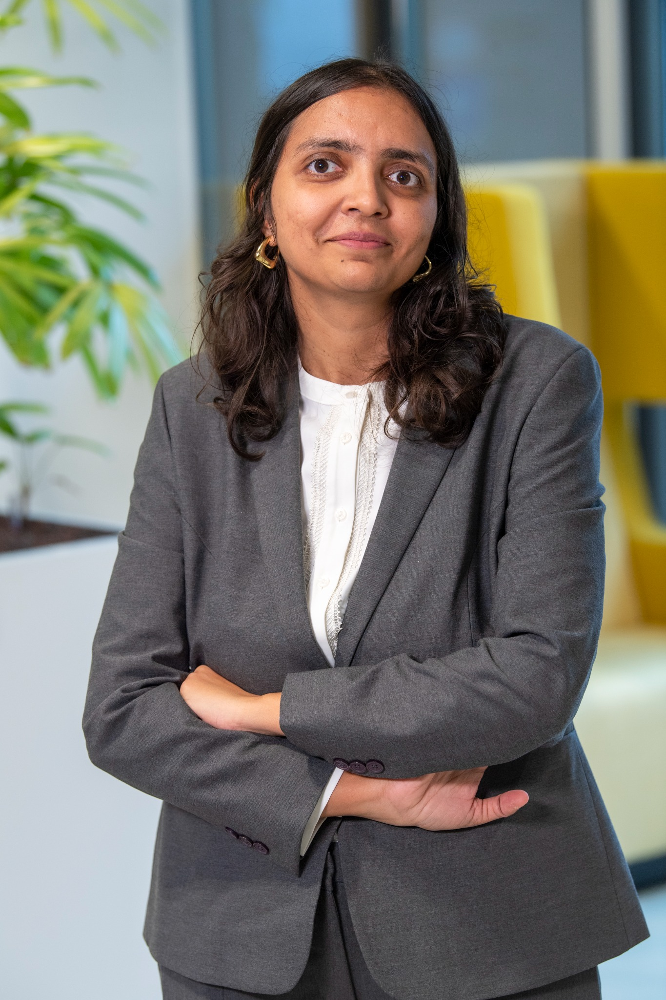

Engineer turned business transformation professional, with experience across technology, financial services, consulting, programmes and policy — now focused on AI-enabled business transformation.
Explore my work Download my CV
My career has moved across software engineering, financial services, consulting, development programmes and policy. I recently completed my MBA at TIAS School for Business and Society and have been building deeper capability in AI, data, finance and digital transformation.
Computer Science background with software engineering experience and hands-on work with Python, SQL, Power BI and Tableau.
MBA-qualified with experience structuring business cases, requirements, process improvements and stakeholder-aligned solutions.
6+ years across complex programmes, cross-functional coordination, delivery, monitoring and measurable outcomes.
Practical exposure to AI use-case design, agentic workflows, generative AI and human-centred technology solutions.
My MBA capstone explored and validated an AI-coached intake flow designed to help users structure incomplete or inconsistent requests before submission. The concept was prototyped using Microsoft Copilot and developed to be platform-agnostic and reusable beyond the original context.
MBA Capstone • AI Use Case DesignValidated and scoped a multi-agent AI compliance workflow, translating a new EU regulation into a structured business case while coordinating technology, compliance and business stakeholders.
AI • Regulation • Compliance • Business CaseDelivered a large-scale employability programme reaching approximately 20,000 youth across 65 institutions, with approximately 200 progressing into employment. The work involved programme delivery, stakeholder coordination, donor reporting and employer partnerships.
Programme Management • Operations • ImpactStarted my career as a software engineer, building front-end features for banking and e-commerce client applications and collaborating with QA and onshore teams to resolve production issues.
Technology • Financial ServicesI don't start with “Where can we use AI?” I start with “What problem are we trying to solve, and is AI the right answer?”
When working with a mortgage business or another regulated organisation, I would start with an existing operational problem rather than assuming that AI is the answer.
My principle: start with the problem, understand the process, challenge the need for AI, and only then design the technology-enabled solution.
I enjoy staying curious outside my formal work as well — through reading, travelling and continuously learning.
Currently reading Weapons of Math Destruction by Cathy O'Neil — exploring how mathematical models can shape decisions and society.
I enjoy discovering new places, cultures and perspectives — and especially planning thoughtful, history- and experience-rich trips.
Recently completed the FMVA and currently continuing to deepen my understanding of finance alongside AI, data and business transformation.